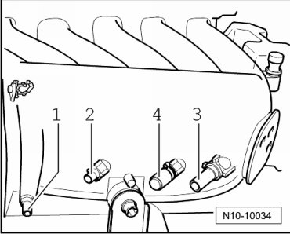

Exhaust Manifold and Exhaust Pipe with Catalytic Converters
Exhaust Manifold and Exhaust Pipe with Catalytic Converters
• After working on the exhaust system ensure that the system has sufficient clearance from the bodywork. If necessary, loosen the flange on the catalytic converter and realign mufflers and exhaust pipes --> [ Aligning Exhaust System ] Removal and Replacement
Special tools, testers and auxiliary items required
• Ring spanner 7-piece set for oxygen sensor (3337)
• Torque wrench (5 to 50 Nm) (V.A.G 1331)
• Torque wrench (40 to 200 Nm) (V.A.G 1332)
Removing
- Disconnect batteries:
• The procedure must be strictly followed!
- Pull vacuum hoses - 1 - from intake manifold.

- Pull vacuum hose - 4 - from intake manifold.
- Pull pressure hose off secondary air injection pump - arrow -.

- Remove air filter housing complete.
- Remove the intake manifold --> [ Cylinder Head Cover ] Cylinder Head Cover.
- Remove heat shield with intake manifold support from cylinder head.
- Separate connectors - 1 to 4 - for lambda probes unclip wires from wiring guides.

- Unscrew lambda probes from catalytic converters using open wrench set (3337).
- Raise the vehicle.
- Remove securing nuts from main catalytic converter flange.
- Unbolt support to transmission.
- Unbolt flange to exhaust manifold.
- Remove exhaust manifold.
- Now carefully remove exhaust pipe with catalytic converters.
Installing
• When installing exhaust pipes, ensure that the flange connection after the catalytic converter seals tightly. Leaks in this area produce pulsations in the exhaust. This allows ambient air to reach the lambda probe after catalytic converter and the lambda regulation will be disturbed.
• Adjust the exhaust system so that there is sufficient clearance to the transmission and subframe.
The rest of the assembly is basically a reverse of the disassembling sequence.